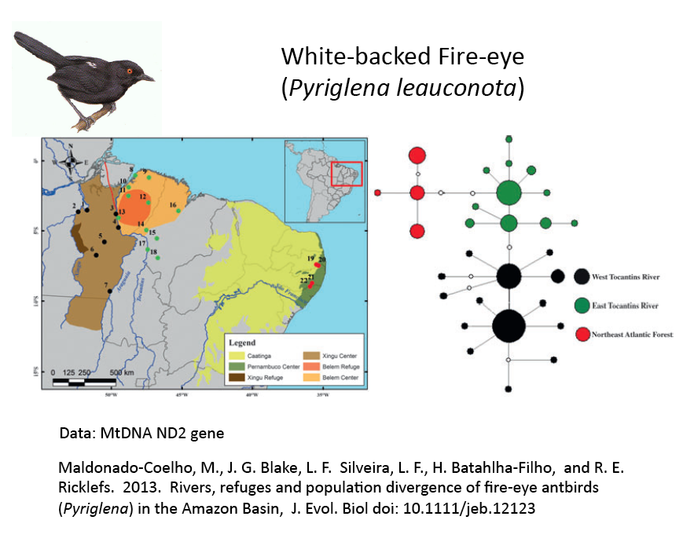

This new grant promises to gather and bring together a wealth of new data on the maintenance, diversification and history of Amazonia and it biota. We are in the process of developing a format that will convey this information to the public, other scientists and stakeholders in a way that allows for a broader appreciation and understanding of essential role evolution needs to play in our ability to adequately care for Amazonia into the future. Thus, we intend to develop and Evolutionary Atlas of Amazonian Biodiversity that will not only serve as a place to host findings from our projects, but also serve as a valuable outlet to disseminate results of evolutionary studies of any researcher studying evolution in Amazonia. Stay tuned as we develop this concept over the course of our grant
Below are some examples from recent publications of how we hope to provide access to an atlas of published research on Amazonian biodiversity.
Aves: Trumpeters(Genus Psophia)
Data included: MtDNA ND2 and Cytb genes, Nuclear BFib7 and RAG2 genes
Ribas, C. C., A. Aleixo, A. C. R. Nogueira, C. Y. Miyaki, and J. Cracraft. A palaeogeographic model for biotic diversification with Amazonia over the past three million years. Proc. Roy. Soc. B 279: 681-689.
Aves: Antbirds(Genus Pyriglena)
